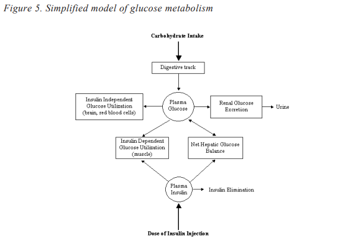
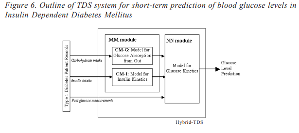

HTML PAGE(261-265)
261-265
Clinical Decision Support Systems
researchers to discriminate normal from malignant hepatic tissue. Texture features
estimated from the SGLDM have been applied to a probabilistic Neural Network (NN) for
the characterisation of hepatic tissue (hepatoma and haemangioma) from CT images
(Chen, Chung, Chen, Tsa, & Chang, 1998). Although a lot of effort has been devoted to
liver tissue characterisation, the developed systems are usually limited to two or three
classes of liver tissue and do not gain from the interaction of different texture characterization methods or the combination of different classifiers.
Two different approaches have been used to design a CAD system that characterises and
automatically classifies hepatic lesions from non-enhanced CT images. ROIs corresponding to normal liver, hepatic cysts, haemangiomas, and hepatocellular carcinomas
(Figure 3) were delineated by an experienced radiologist and were used as input to the
systems. Of a total of 147 ROIs that were interrogated, 76 corresponded to healthy
controls, 19 to cysts, 28 to haemangiomas, and 24 to hepatocellular carcinomas.
In the first approach, the average gray level and 48 texture characteristics derived from
the SGLDM (Gletsos, Mougiakakou, Matsopoulos, Nikita, Nikita & Kelekis, 2003)
consisted the feature vector providing input to a classifier module which was made up
of three sequentially placed feed-forward ANNs. The first ANN was used to discriminate
normal from pathological liver tissue. The pathological liver tissue regions were
characterised by the second ANN as cyst or “other disease”. The third ANN classified
“other disease” into haemangioma or hepatocellular carcinoma. Three feature selection
techniques have been applied to each individual ANN: the sequential forward selection,
the sequential floating forward selection, and a GA for feature selection. The comparative
study of the above dimensionality reduction methods showed that GAs result in lower
dimensionality feature vectors and improved classification performance.
In another study, characterisation and classification of liver tissue into one of the
previous classes was achieved through a CAD system based on the use of various texture
features and ensembles of classifiers (Mougiakakou et al., 2003a) in an attempt to define
an optimally performing CAD system architecture. The effect of feature selection on the
resulting classification performance was also studied through the application of a GAbased feature selection technique to feature vectors with dimensionality exceeding a
predefined threshold. For each ROI, five distinct sets of texture features were extracted
using the following methods: first order statistics, SGLDM, GLDM, Laws’ texture energy
measures, and the fractal dimension. A set of classifiers whose individual predictions are
combined in some way (typically by voting) to classify new examples consists an
ensemble of classifiers.
The attraction that this topic exerts on machine learning and diagnostic decision support
researchers is based on the premise that ensembles are often much more accurate than
the individual classifiers that make them up. Two different ensembles of classifiers were
constructed and compared. The first one consists of five multi-layer perceptron ANNs,
each using as input either one of the computed texture feature sets or its reduced version
after GA-based feature selection. The second ensemble of classifiers was generated by
combining five different type primary classifiers, namely one multi-layer perceptron
ANN, one probabilistic ANN, and three k-Nearest Neighbour (k-NN) classifiers. The
primary classifiers of the second ensemble used identical input vectors, which resulted
from the combination of the five texture feature sets, either directly or after proper GA

based feature selection. The final decision of each ensemble of classifiers was extracted
by applying appropriate voting schemes across the outputs of the primary classifiers.
The optimally performing CAD system architecture was chosen, based on the achieved
classification performances in a testing data set. The highest individual classification
performances in the testing set were 90.63 percent using the dimensionality-reduced
Laws’ texture energy features, followed by an 87.5 percent performance using first-order
statistical features.
Therapeutic Decision Support
TDS systems aim to optimise and individualise patient treatment, including diet, drug
treatment or radiotherapy treatment. In the following, the fundamental theory for the
development of TDS systems is presented along with an example of a TDS system.
Basic Principles
TDS systems are based on the combined use of available patient or literature data and
simulation models (Figure 4). More specifically, individualised patient data (medical
history, laboratory tests, medical imaging data) along with information about the disease
available in databases (DBs) provide input to appropriate simulation models. Simulation
is then performed for alternative therapeutic schemes leading to the estimation of an
optimal therapeutic scheme for the specific patient.
TDS systems can be based on the use of simulation models of biological and physiological procedures and/or stochastical analysis of available data. The most widely used
methodologies include Compartmental Models (CMs), stochastical simulation methods,
cellular automata methods, ANNs and AI methods (Brown & Rothery, 1993).
The specific goal of CMs is to represent complicated physiological systems with
relatively simple mathematical models. In compartmental analysis, systems that are
continuous and essentially non-homogeneous are replaced with a series of discrete
spatial regions, termed compartments, considered to be homogeneous (Jacquez, 1985).
A system can be defined by a class of dynamic models widely used in quantitative studies
of the kinetics of materials in physiological systems. Materials are considered to be either
exogenous (such as a drug or tracer) or endogenous (such as a substrate like glucose
or an enzyme or hormone like insulin). Kinetics refers to time-variant processes, such as
production, distribution, transport, utilisation, and substrate-hormone control interactions.
A compartment is an amount of material or spatial region that behaves as though it is well
mixed and kinetically homogeneous. The concept of well mixed is related to uniformity
of information. This means that any samples taken from the compartment at the same time
will have identical properties and are equally representative of the system. Kinetic
homogeneity means that each particle within a chamber has the same probability of taking
any exit pathway. A CM then is defined as a finite number of compartments with specific
interconnections between them, each representing a flux of material which physiologically represents transport from one location to another and/or a chemical transformation
(Cobelli & Foster, 1998). The definition of a compartment is actually a theoretical

Golemati, Mougiakakou, Stoitsis, Valavanis and Nikita
Copyright © 2005, Idea Group Inc. Copying or distributing in print or electronic forms without written
permission of Idea Group Inc. is prohibited.
construct which could combine material from several physical spaces within a system.
Consequently, the ability to equate a compartment to a physical space depends on the
system being studied and associated model assumptions.
Stochastical models involve random variables that are functions of time and include
probabilistic considerations. For a given set of initial conditions, a stochastic model
yields a different solution each and every time (Brown & Rothery, 1993).
Cellular automata are widely used to solve diffusion problems in physiological systems.
A grid of points is used to define a number of geometrical cells. Each cell corresponds
to a variable with a limited number of possible values. The set of variables is renewed,
at regular intervals, using the same renewal rule for every point. The rules are local in
space and time, that is, their value in a point at time t depends only on the values of
neighbouring points at time t-1 (Deutsch & Dormann, 2003).
ANNs can be used to simulate complex physiological/biological systems, such as the
glucose metabolism, presented in the next paragraph. Their wide use in the simulation
of non-linear systems is due to their ability to extract hidden data information, and to
efficiently approximate any function of many variables.
Therapeutic Decision Support for Insulin Dependent
Diabetes Mellitus
Diabetes Mellitus (DM) is a clinical condition caused by a disturbance in the metabolism
of glucose introduced through nutrition. This disturbance is due to insufficient secretion
or unsatisfactory action of the hormone insulin, which regulates glucose metabolism and

is normally secreted by the pancreas. In Insulin Dependent Diabetes Mellitus (IDDM)
, also known as Type 1 DM, insulin is completely absent. DM causes extensive disorders
in the body and thus affects the normal function of several organs (renal insufficiency,
progressive vision reduction, infarction, etc.). These complications can be prevented
through regular glucose control, that is, daily regular measurement of blood glucose
concentration, and appropriate insulin treatment to maintain blood glucose within normal
levels. The appropriate insulin regime has to be carefully adjusted, since blood glucose
profile is rapidly, non predictably changing due to its dependence not only on the internal
mechanism of glucose-insulin metabolism but also on a number of life style factors, like
carbohydrate content of meals, physical activity and exercise, stress, other diseases, and
so on. A simplified model of the most important internal and external factors associated
with glucose metabolism, is presented in Figure 5.
During the last years, many TDS systems have been developed to assist not only the
diabetes patients to handle their blood glucose levels, but also the physicians to
understand the metabolic mechanism of their diabetes patients (Carson, 1998; Lehmann,
1997). These systems can store and display information about measured blood glucose
concentration, food and insulin intake, physical activity, and other diseases. The
efficiency of the aforementioned systems is significantly enhanced in case they comprise
a simulation of glucose metabolism in order to predict short-term blood glucose levels,
visualize the effect of the life-style parameters in the blood glucose profile, and make
recommendations about the appropriate dose and time of insulin injections. In this
context, many research approaches have been reported using expert systems, time series
analysis, Mathematical Models (MM), and causal probabilistic networks.
The acceptance of the aforementioned TDS systems by diabetes patients was limited
because these systems take into account only a limited number of the factors associated
with glucose metabolism, and they are not easily individualised to accurately simulate
metabolic processes for a specific Type 1 diabetes patient. In view of the above
difficulties, the use of ANNs for the implementation of diabetes management decision
support systems has been proposed. ANNs have been recently employed (Mougiakakou
& Nikita, 2000) to advise on insulin regime and dose adjustment for Type 1 diabetes
